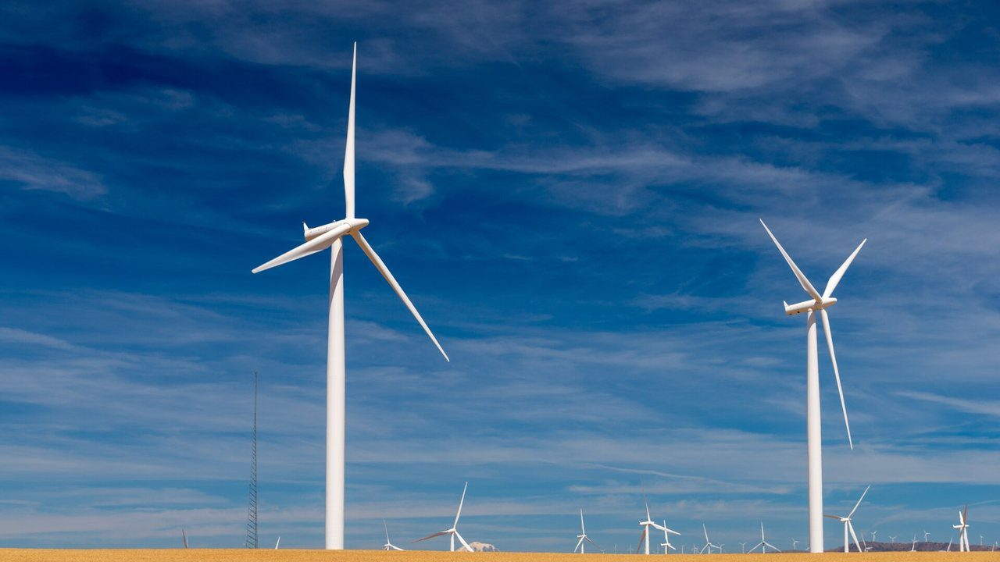

Race, Prairie Paceline

Behind
Best +0:01
371W
Target 418 W-47 W
- Cadence
- 87rpm
- Heart
- 140bpm
- Speed
- 26.5km/h
Warm-up1 of 17
1:08
Next: · 0:30 at level 24
-1.0%
6 m climbed
2.48 km
8
Resistance / 32
Solo races your best-time ghost: position reads Ahead or Behind, and solo alone gets a Pause button. Frozen at 3:52.